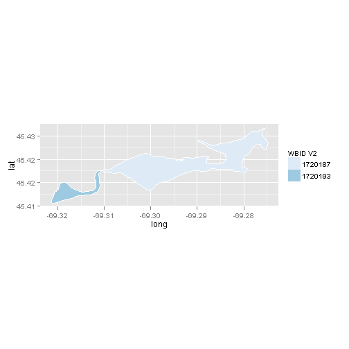
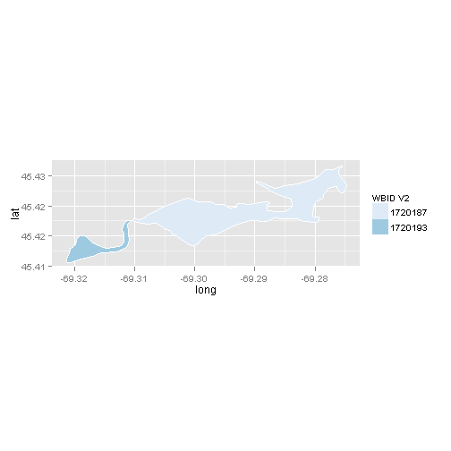 
The following code will open the formatted text version of the Rmarkdown file in a browser:
browseURL('https://github.com/willbmisled/LakesDB/blob/master/tables/joinMRB1_V1V2.md')
The data can be loaded into R with the following code:
#Get the Data load(url('https://raw.github.com/willbmisled/LakesDB/master/tables/joinMRB1_V1V2.rda')
joinMRB1_V1V2 is a data frame with 28136 obs. and 4 variables
joinMRB1_V1V2 Data Definitions:
| Field | Definition |
|---|---|
| WBID_V1 | Waterbody ID for NHDplus V1 lakes; same as V1$WB_ID |
| WBID_V2 | Waterbody ID for NHDplus V2 lakes; same as V1$COMID |
| flag | Indicates that the there may be differences in how V1 and V2 represent the lake (see below) |
| comment | additional information on the lake or the flag |
joinMRB1_V1V2 flag Definitions:
| Flag | Definition |
|---|---|
| flag==0 | Lakes Colocated with equal areas; Note: WBIDs may be the same or different in V1 and V2 |
| flag==1 | Single Lake in V1 split into two or more lakes in V2 |
| flag==2 | Multiple Lakes in V1 represented as a single lake in V2 |
| flag==3 | Lakes collocated but areas unequal |
| flag==4 | In V1 but not V2 |
| flag==5 | In V2 but not V1 |
| flag==6 | V2 Duplicate lake; V2_166421080=V2_19333669=V1_19333669 |
Here are the first few lines of the V1 attribute data:
## OBJECTID WB_ID AlbersAreaM Centroid_Long Centroid_Lat ShorelineAlbersM
## 1 1 487 42396 -68.38 46.19 896.8
## 2 2 489 26178 -68.39 46.19 735.7
## 3 3 491 1480297 -68.38 46.18 7741.6
## 4 4 493 67348 -68.11 46.19 1056.2
## 5 5 495 68737 -68.42 46.18 1671.7
## 6 6 499 27255 -68.36 46.18 700.0
## Shape_Length Shape_Area AlbersX AlbersY HUC_Region
## 1 0.009059 0.000004941 2106441 1279649 1
## 2 0.008068 0.000003051 2105817 1279255 1
## 3 0.084338 0.000172488 2106786 1278696 1
## 4 0.011058 0.000007848 2126595 1285107 1
## 5 0.019320 0.000008010 2104045 1278093 1
## 6 0.008649 0.000003176 2108146 1278936 1
Note: for V1 the only important attribute (for now) is the WB_ID. This is the unique id for the lake
Here are the first few lines of the V2 attribute data:
## COMID
## 10101972 10101972
## 10101978 10101978
## 10101982 10101982
## 10101984 10101984
## 10101986 10101986
## 10101990 10101990
Note: for V2 the only attribute is the COMID. This is the unique id for the lake and should match V1$WB_ID
WBID is the unique ID for the Waterbody. This was derived from the NHDplus COMID. The lakes files use different naming conventions in V1 the WBID is V1$WB_ID. For V2 it is V2$COMID. Both files are in the Albers projection.
Comparison Steps:
These are the lakes that need to be verified:
## WBID_V1 WBID_V2 nV1 nV2 flagWBID areaV1 areaV2 perDif flagArea
## 1 1720193 1720187 2 1 1 1409433 1243674 0.12 1
## 2 1720193 1720193 2 1 1 1409433 165757 0.88 1
## 3 9312497 5842312 2 1 1 3939308 3015457 0.23 1
## 4 9312497 120053397 2 1 1 3939308 898004 0.77 1
## 5 9326606 9326590 2 1 1 4655489 1151119 0.75 1
## 6 9326606 9326606 2 1 1 4655489 3504371 0.25 1
## 7 9479066 9443357 2 1 1 90662 82919 0.09 1
## 8 9479066 9479066 2 1 1 90662 7742 0.91 1
## 9 9512548 9512546 2 1 1 9198135 9072954 0.01 1
## 10 9512548 9512548 2 1 1 9198135 125180 0.99 1
## 11 11686920 4724203 3 1 1 75539790 16735 1.00 1
## 12 11686920 4726045 3 1 1 75539790 46468664 0.38 1
## 13 11686920 120053255 3 1 1 75539790 29054387 0.62 1
## 14 22222791 7688829 2 1 1 2367407 2305872 0.03 1
## 15 22222791 22222791 2 1 1 2367407 2305872 0.03 1
## 16 22223101 7689297 3 1 1 49256 8773 0.82 1
## 17 22223101 9344247 3 1 1 49256 14948 0.70 1
## 18 22223101 166174657 3 1 1 49256 25534 0.48 1
## 19 7717818 120052268 1 2 1 6542258 10364202 0.58 1
## 20 7717850 120052268 1 2 1 3821949 10364202 1.71 1
## 21 8086079 120053438 1 2 1 21356 34158 0.60 1
## 22 22746261 120053438 1 2 1 12801 34158 1.67 1
## 23 6094729 166174730 1 1 0 11963 5123479 427.28 1
## 24 6710763 931050002 1 1 0 9314 375329 39.30 1
## 25 6732123 166174267 1 1 0 169247 15832932 92.55 1
## 26 6760548 931070002 1 1 0 24786 15283308 615.61 1
## 27 8390908 8390908 1 1 0 338542 112019 0.67 1
## 28 NA 15516920 NA 1 2 NA 14580 NA 2
## 29 NA 15516922 NA 1 2 NA 14710 NA 2
## 30 NA 60444415 NA 1 2 NA 58649 NA 2
## 31 NA 166421080 NA 1 2 NA 97407208 NA 2
## 32 4782861 NA 1 NA 2 15023566 NA NA 2
## 33 10312598 NA 1 NA 2 4707417 NA NA 2
## 34 22287527 NA 1 NA 2 717449 NA NA 2
## 35 22287665 NA 1 NA 2 67309 NA NA 2
Update joinMRB1_V1V2
For chkV1V2[c(1, 2),]
Plotting the lakes (see below) indicates they are contiguous and could be joined or separate.
Add WBIDs to joinMRB1_V1V2 with flag=1 indicating a single lake in V1 maps to multiple lake in V2
## Map from URL : http://maps.googleapis.com/maps/api/staticmap?center=45.418623,-69.298091&zoom=14&size=%20640x640&scale=%202&maptype=satellite&sensor=false
## Google Maps API Terms of Service : http://developers.google.com/maps/terms
## Regions defined for each Polygons
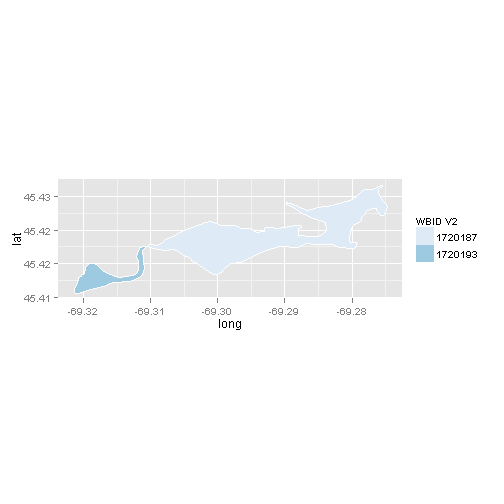
## Map from URL : http://maps.googleapis.com/maps/api/staticmap?center=43.522295,-70.862386&zoom=13&size=%20640x640&scale=%202&maptype=satellite&sensor=false
## Google Maps API Terms of Service : http://developers.google.com/maps/terms
## Regions defined for each Polygons
 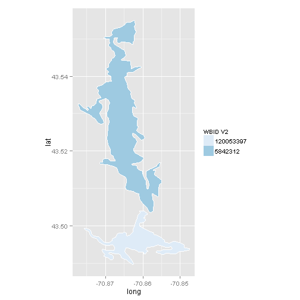
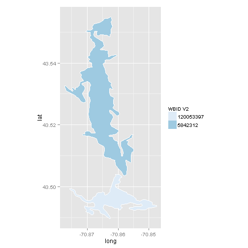 
## Map from URL : http://maps.googleapis.com/maps/api/staticmap?center=43.627879,-72.151526&zoom=13&size=%20640x640&scale=%202&maptype=satellite&sensor=false
## Google Maps API Terms of Service : http://developers.google.com/maps/terms
## Regions defined for each Polygons
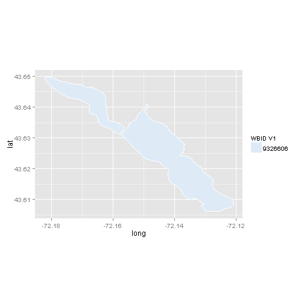 

## Map from URL : http://maps.googleapis.com/maps/api/staticmap?center=39.559788,-74.393368&zoom=16&size=%20640x640&scale=%202&maptype=satellite&sensor=false
## Google Maps API Terms of Service : http://developers.google.com/maps/terms
## Regions defined for each Polygons
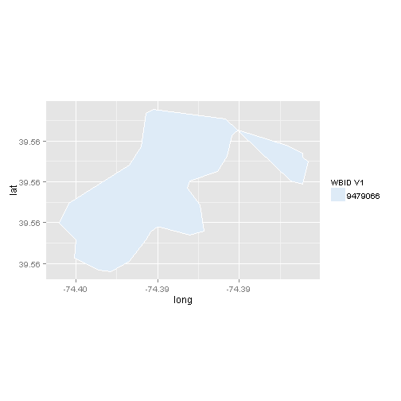 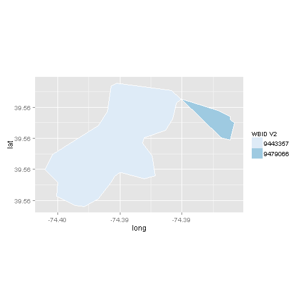 
## Map from URL : http://maps.googleapis.com/maps/api/staticmap?center=40.616363,-74.828838&zoom=13&size=%20640x640&scale=%202&maptype=satellite&sensor=false
## Google Maps API Terms of Service : http://developers.google.com/maps/terms
## Regions defined for each Polygons
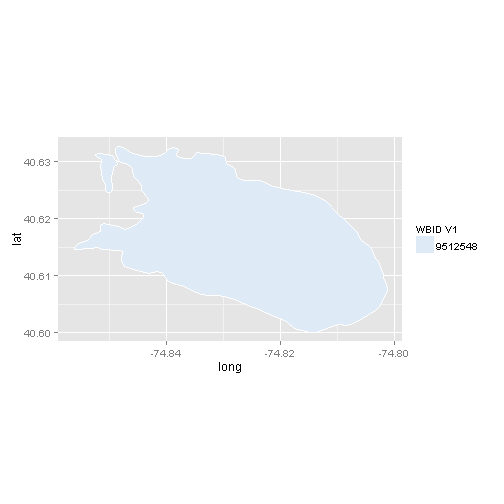 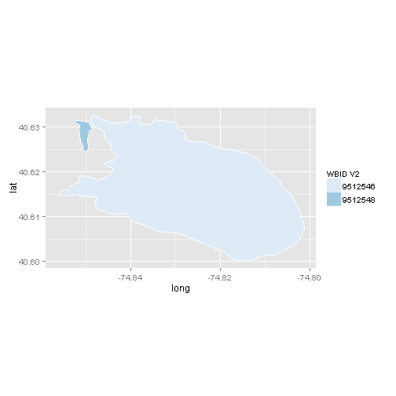 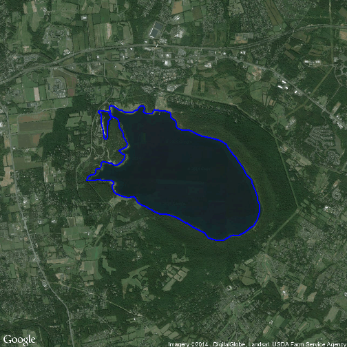
## Map from URL : http://maps.googleapis.com/maps/api/staticmap?center=39.845476,-76.350141&zoom=10&size=%20640x640&scale=%202&maptype=satellite&sensor=false
## Google Maps API Terms of Service : http://developers.google.com/maps/terms
## Regions defined for each Polygons


## Map from URL : http://maps.googleapis.com/maps/api/staticmap?center=42.410645,-72.22527&zoom=14&size=%20640x640&scale=%202&maptype=satellite&sensor=false
## Google Maps API Terms of Service : http://developers.google.com/maps/terms
## Regions defined for each Polygons
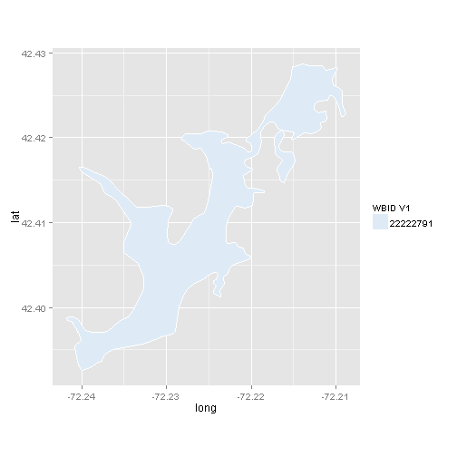 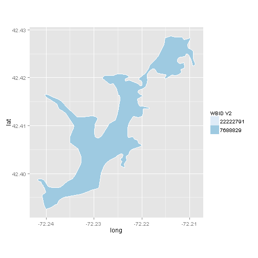 
## Map from URL : http://maps.googleapis.com/maps/api/staticmap?center=42.212832,-71.999227&zoom=16&size=%20640x640&scale=%202&maptype=satellite&sensor=false
## Google Maps API Terms of Service : http://developers.google.com/maps/terms
## Regions defined for each Polygons


## Map from URL : http://maps.googleapis.com/maps/api/staticmap?center=41.461673,-73.289158&zoom=11&size=%20640x640&scale=%202&maptype=satellite&sensor=false
## Google Maps API Terms of Service : http://developers.google.com/maps/terms
## Regions defined for each Polygons


## Map from URL : http://maps.googleapis.com/maps/api/staticmap?center=42.499641,-75.15594&zoom=17&size=%20640x640&scale=%202&maptype=satellite&sensor=false
## Google Maps API Terms of Service : http://developers.google.com/maps/terms
## Regions defined for each Polygons


## Map from URL : http://maps.googleapis.com/maps/api/staticmap?center=42.327423,-72.856455&zoom=12&size=%20640x640&scale=%202&maptype=satellite&sensor=false
## Google Maps API Terms of Service : http://developers.google.com/maps/terms
## Regions defined for each Polygons
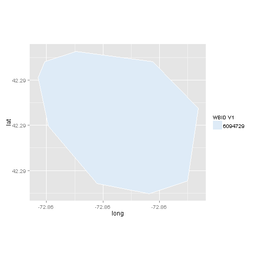 

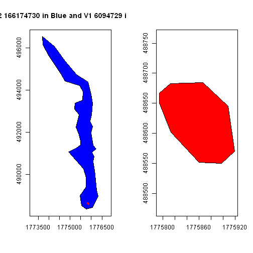
## Map from URL : http://maps.googleapis.com/maps/api/staticmap?center=44.254117,-69.531488&zoom=16&size=%20640x640&scale=%202&maptype=satellite&sensor=false
## Google Maps API Terms of Service : http://developers.google.com/maps/terms
## Regions defined for each Polygons
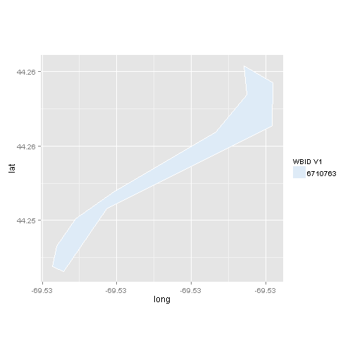 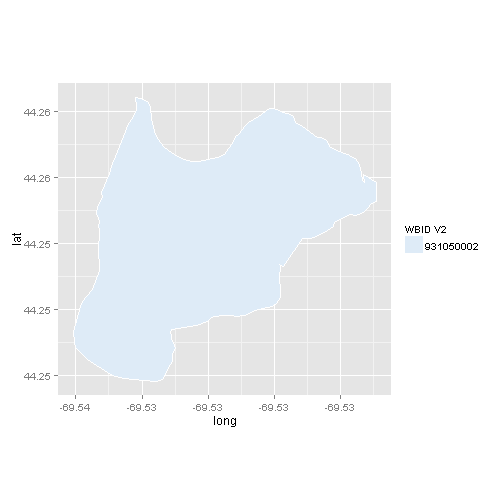 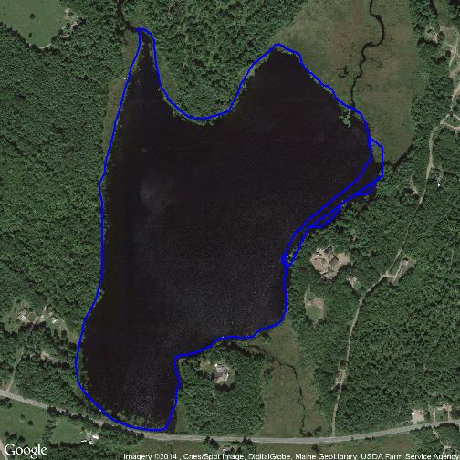

## Map from URL : http://maps.googleapis.com/maps/api/staticmap?center=43.517782,-71.689855&zoom=12&size=%20640x640&scale=%202&maptype=satellite&sensor=false
## Google Maps API Terms of Service : http://developers.google.com/maps/terms
## Regions defined for each Polygons
 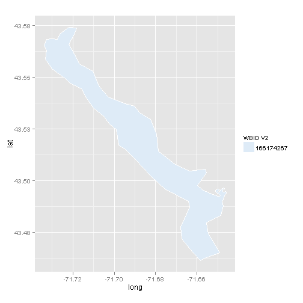 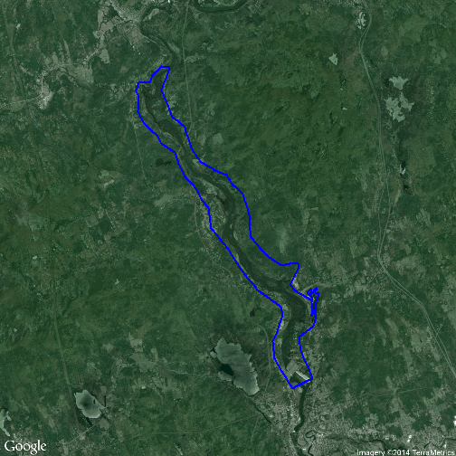
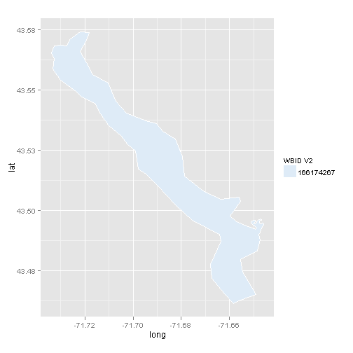 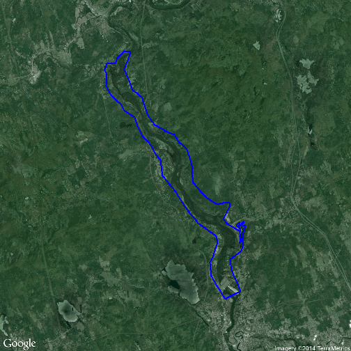

## Map from URL : http://maps.googleapis.com/maps/api/staticmap?center=43.35065,-71.757673&zoom=12&size=%20640x640&scale=%202&maptype=satellite&sensor=false
## Google Maps API Terms of Service : http://developers.google.com/maps/terms
## Regions defined for each Polygons
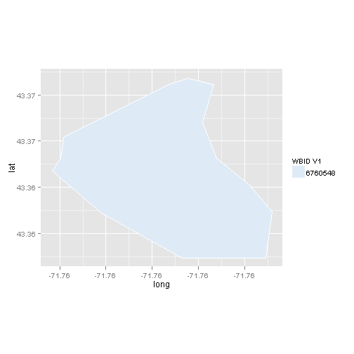 

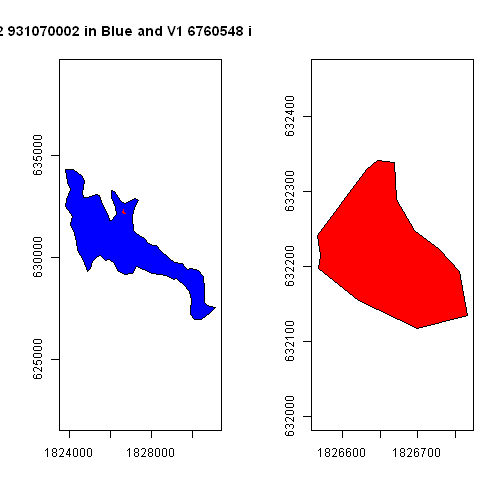
## Map from URL : http://maps.googleapis.com/maps/api/staticmap?center=38.558567,-75.557132&zoom=16&size=%20640x640&scale=%202&maptype=satellite&sensor=false
## Google Maps API Terms of Service : http://developers.google.com/maps/terms
## Regions defined for each Polygons
 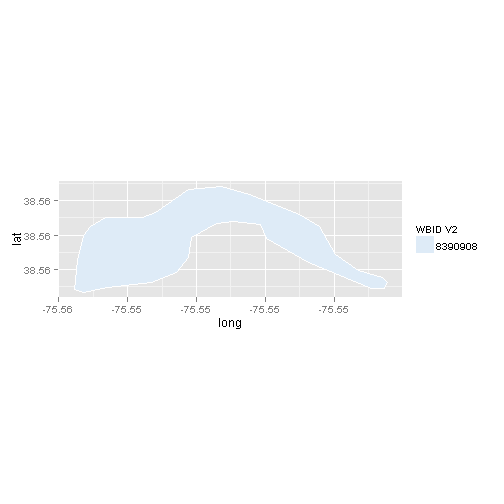 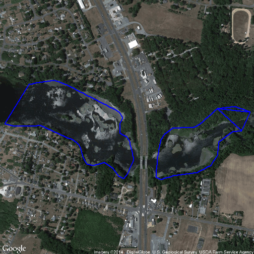
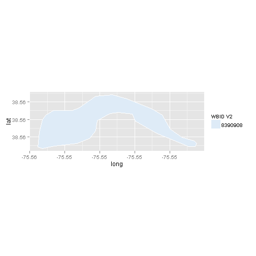 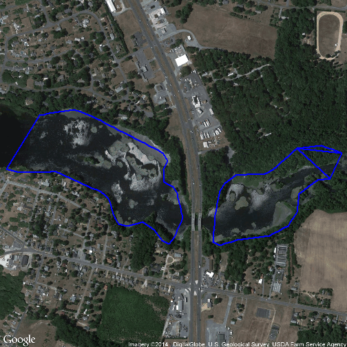
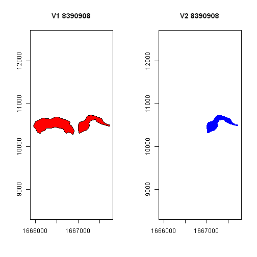
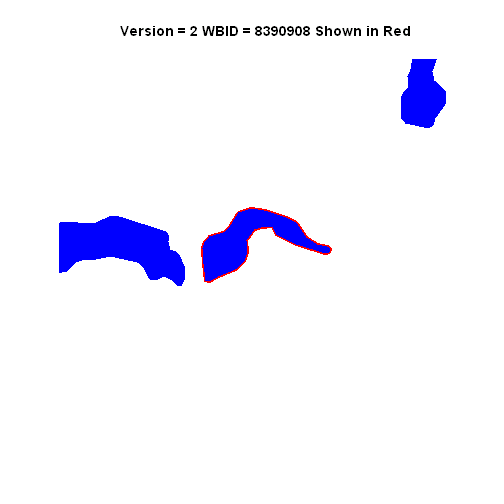
## WBID_V1 WBID_V2 nV1 nV2 flagWBID areaV1 areaV2 perDif flagArea
## 28 NA 15516920 NA 1 2 NA 14580 NA 2
## 29 NA 15516922 NA 1 2 NA 14710 NA 2
## 30 NA 60444415 NA 1 2 NA 58649 NA 2
## 31 NA 166421080 NA 1 2 NA 97407208 NA 2
## 32 4782861 NA 1 NA 2 15023566 NA NA 2
## 33 10312598 NA 1 NA 2 4707417 NA NA 2
## 34 22287527 NA 1 NA 2 717449 NA NA 2
## 35 22287665 NA 1 NA 2 67309 NA NA 2
## flag
## 28 1
## 29 1
## 30 1
## 31 1
## 32 1
## 33 1
## 34 1
## 35 1

## Map from URL : http://maps.googleapis.com/maps/api/staticmap?center=40.155236,-76.750285&zoom=12&size=%20640x640&scale=%202&maptype=satellite&sensor=false
## Google Maps API Terms of Service : http://developers.google.com/maps/terms

Row <- nrow(joinMRB1_V1V2) + 1 #row to add
joinMRB1_V1V2[Row, "WBID_V1"] <- 4782861
joinMRB1_V1V2[Row, "flag"] <- 4
joinMRB1_V1V2[Row, "comment"] <- "In V1 but not V2."
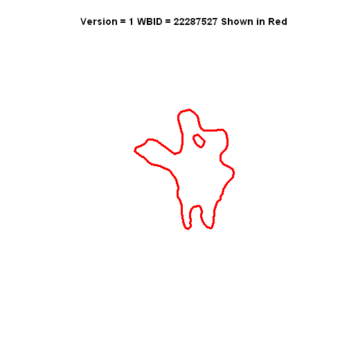
## Map from URL : http://maps.googleapis.com/maps/api/staticmap?center=43.118195,-72.28975&zoom=14&size=%20640x640&scale=%202&maptype=satellite&sensor=false
## Google Maps API Terms of Service : http://developers.google.com/maps/terms
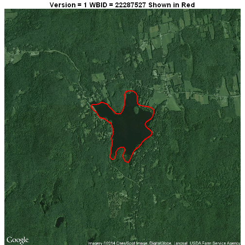
Row <- nrow(joinMRB1_V1V2) + 1 #row to add
joinMRB1_V1V2[Row, "WBID_V1"] <- 22287527
joinMRB1_V1V2[Row, "flag"] <- 4
joinMRB1_V1V2[Row, "comment"] <- "In V1 but not V2."

## Map from URL : http://maps.googleapis.com/maps/api/staticmap?center=43.304796,-73.681789&zoom=16&size=%20640x640&scale=%202&maptype=satellite&sensor=false
## Google Maps API Terms of Service : http://developers.google.com/maps/terms
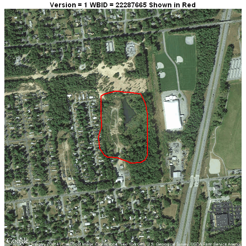
Row <- nrow(joinMRB1_V1V2) + 1 #row to add
joinMRB1_V1V2[Row, "WBID_V1"] <- 22287665
joinMRB1_V1V2[Row, "flag"] <- 4
joinMRB1_V1V2[Row, "comment"] <- "In V1 but not V2."
## Error: missing value where TRUE/FALSE needed
## Error: missing value where TRUE/FALSE needed
Row <- nrow(joinMRB1_V1V2) + 1 #row to add
joinMRB1_V1V2[Row, "WBID_V2"] <- 15516920
joinMRB1_V1V2[Row, "flag"] <- 5
joinMRB1_V1V2[Row, "comment"] <- "In V2 but not V1."

## Map from URL : http://maps.googleapis.com/maps/api/staticmap?center=43.457838,-75.345451&zoom=16&size=%20640x640&scale=%202&maptype=satellite&sensor=false
## Google Maps API Terms of Service : http://developers.google.com/maps/terms

Row <- nrow(joinMRB1_V1V2) + 1 #row to add
joinMRB1_V1V2[Row, "WBID_V2"] <- 15516922
joinMRB1_V1V2[Row, "flag"] <- 5
joinMRB1_V1V2[Row, "comment"] <- "In V2 but not V1."

## Map from URL : http://maps.googleapis.com/maps/api/staticmap?center=41.327801,-74.189293&zoom=15&size=%20640x640&scale=%202&maptype=satellite&sensor=false
## Google Maps API Terms of Service : http://developers.google.com/maps/terms

Row <- nrow(joinMRB1_V1V2) + 1 #row to add
joinMRB1_V1V2[Row, "WBID_V2"] <- 60444415
joinMRB1_V1V2[Row, "flag"] <- 5
joinMRB1_V1V2[Row, "comment"] <- "In V2 but not V1."
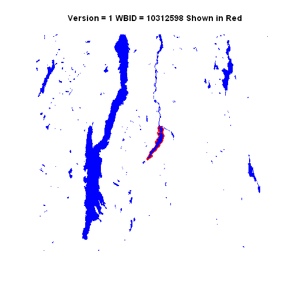
## Map from URL : http://maps.googleapis.com/maps/api/staticmap?center=43.558438,-73.455178&zoom=10&size=%20640x640&scale=%202&maptype=satellite&sensor=false
## Google Maps API Terms of Service : http://developers.google.com/maps/terms

## Error: missing values are not allowed in subscripted assignments of data
## frames
## Error: missing values are not allowed in subscripted assignments of data
## frames
When V2_WBID=166421080 and V1 lakes are plotted V2_WBID=166421080 is seen to be colocated with a V1 lakes 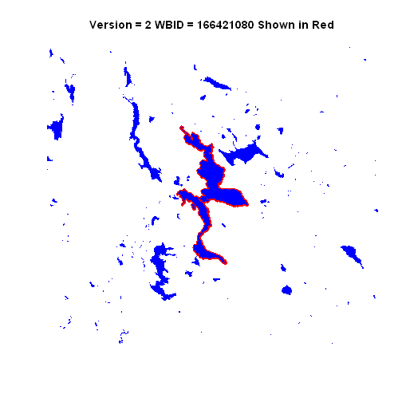
When he HUC01 shapefile is opened in ArcMap there is no lake corresponding to V2_WBID=166421080 in the attribute table.
V2_WBID=19333669,however, is in the same location.
Returning to R V2_WBID=19333669 and V2_WBID=166421080 are plotted and are clearly the same lake; in the same location and the areas match.
So this is what is happening. Lake V2_WBID=166421080 and V2_WBID=19333669 are the same lake and one should be deleted.
V2_WBID=19333669 is also the same as V1_WBID=19333669
Need to update joinMRB1_V1V2 to reflect this adding a new flag code #5 to explain what happened.
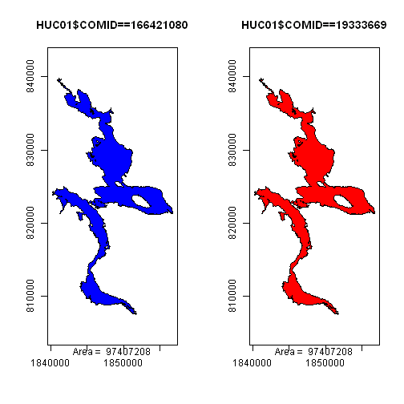
## WBID_V1 WBID_V2 flag
## 26380 19333669 19333669 0
## comment
## 26380 Same Lake; WBID_V1==WBID_V2 and lake areas match
table(V1$WB_ID %in% joinMRB1_V1V2$WBID_V1)
##
## TRUE
## 28122
table(V2$COMID %in% joinMRB1_V1V2$WBID_V2)
##
## TRUE
## 28130
table(joinMRB1_V1V2$WBID_V1 %in% V1$WB_ID)
##
## FALSE TRUE
## 3 28133
joinMRB1_V1V2[which(joinMRB1_V1V2$WBID_V1 %in% V1$WB_ID == FALSE), ]
## WBID_V1 WBID_V2 flag comment
## 28132 NA 15516920 5 In V2 but not V1.
## 28133 NA 15516922 5 In V2 but not V1.
## 28134 NA 60444415 5 In V2 but not V1.
table(joinMRB1_V1V2$WBID_V2 %in% V2$COMID)
##
## FALSE TRUE
## 3 28133
joinMRB1_V1V2[which(joinMRB1_V1V2$WBID_V2 %in% V2$COMID == FALSE), ]
## WBID_V1 WBID_V2 flag comment
## 28129 4782861 NA 4 In V1 but not V2.
## 28130 22287527 NA 4 In V1 but not V2.
## 28131 22287665 NA 4 In V1 but not V2.